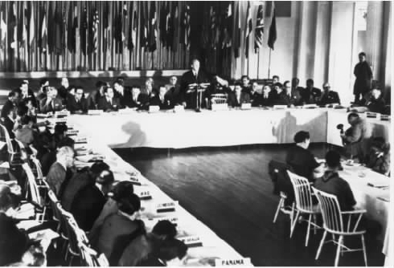
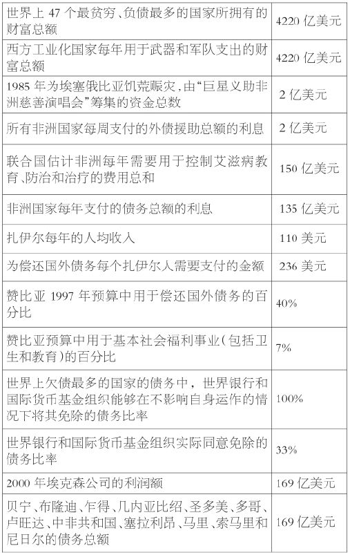
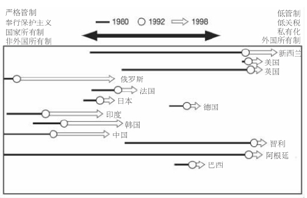
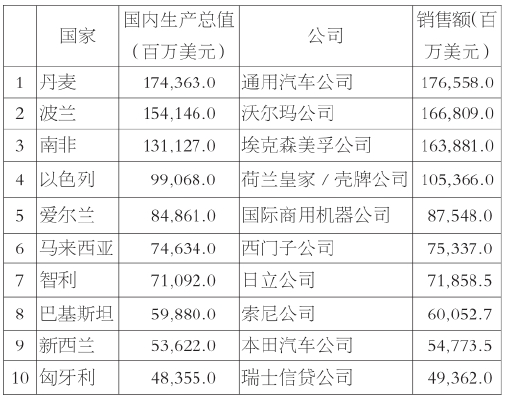

在前一章开头我们讲到，新技术是当代全球化的显著特征之一。确实，最近30年来，重大的技术进步就很好地说明了社会所发生的深刻变革。人们从事经济生产以及组织商品交换的方式发生了变化，这显著地体现了我们时代的一个重大转变。经济全球化是指在全球范围内加强和拓展相互间的经济关系。资金和技术的大量流动激发了商品和服务贸易的发展；市场已延伸到世界的各个角落，并在这一过程中建立了新的国家经济关系。作为构成21世纪全球经济秩序的主要集团，庞大的跨国公司、强大的国际经济机构以及大型的地区贸易体系随之出现了。
当代经济全球化可以追溯到一种新的国际经济秩序的逐渐出现，这一国际经济秩序产生于二战即将结束时在沉寂的新英格兰小镇布雷顿森林召开的一次经济会议。在美国和英国的带领下，北半球主要的经济强国都改变了其在战争期间（1918——1939年）的保护主义政策。与会国一致同意将不遗余力地扩大国际贸易，并决定订立管理国际经济活动的条款；而且，它们还决定建立更加稳定的货币兑换体系，维持各国货币值与美元挂钩，美元与黄金挂钩。在这些预定的规则内，各国可以自由控制其国界的渗透性——各国可以确立各自的政治和经济议程。
布雷顿森林会议还为三个新的国际经济组织制度奠定了基础。国际货币基金组织的建立是为了管理国际货币系统；国际复兴开发银行——后来称为世界银行——原是为了向欧洲战后重建提供贷款而成立的，然而，在20世纪50年代，它的目标进一步扩大，开始为全世界发展中国家的各种工业项目提供贷款；最后，1947年，作为全球性贸易组织的关贸总协定成立，它负责制定并执行多国贸易协议。1995年，世界贸易组织替代了关贸总协定。我们在第八章中将会看到，20世纪90年代，在有关经济全球化的布局及效果方面，世界贸易组织已成为了公众激烈争论的焦点。
在约三十年的运作过程中，布雷顿森林体系极大地促成了被评论者称为“管制资本主义的黄金时代”的建立。现存的由国家控制的国际资本流动机制使得就业充分，福利国家制度进一步发展。工资的提高和社会服务的改进暂时缓和了北半球富国的阶级矛盾。然而，到20世纪70年代初，布雷顿森林体系崩溃了；它的消失加强了经济一体化的趋势，后来评论家把这种趋势看做是全球经济新秩序被分娩时的阵痛。这是怎么回事呢？

图6 1944年召开的布雷顿森林会议。
世界政治的巨大变化逐渐削弱了美国工业的经济竞争力，因此，理查德·尼克松总统在1971年废除了金本位的固定汇率制度。在随后10年里，全球经济表现出不稳定的特点，其具体表现形式为：高通货膨胀率、低经济增长率、高失业率、过高的公共事业赤字，以及两次史无前例的能源危机——由于石油输出国组织能够控制世界上很大一部分石油的供应。最认同管制资本主义模式的北半球的政治力量在一系列选举中大败，这是由提倡以“新自由主义”方式对待经济和社会政策的保守政党导致的。
新自由主义
然而，在二战后的几十年里，即使是欧洲和美国最保守的政党也放弃了那些“放任主义”的思想，相反，它们采用了国家干预主义这种更为人所广泛接受的观点，这种观点的宣传者是布雷顿森林体系的设计者，英国经济学家约翰·梅纳德·凯恩斯。然而，到了20世纪80年代，在英国首相玛格丽特·撒切尔和美国总统罗纳德·里根的带领下，反对凯恩斯主义的新自由主义革命有意识地把全球化的观念和全世界的经济“解放”联系在了一起。
随着1989至1991年前苏联及东欧的解体，新自由主义的经济新秩序获得了更多的合法性。从此出现了有关经济全球化的三项最重大的进展：贸易与金融的国际化、跨国公司势力的不断增强，以及国际经济机构（如国际货币基金组织、世界银行和世界贸易组织）作用的加强。下面我们来简要地审视一下这些重要特征。
许多人把经济全球化与自由贸易中有争议的问题联系了起来。的确，从1947年到20世纪90年代末，世界贸易总值增幅惊人，已由570亿猛增至60000亿。最近几年，当北半球富国通过地区及国际自由贸易协定（如北美自由贸易协定和关贸总协定）不断致力于建立一个全球单一市场时，公众对自由贸易所谓的好处和坏处的讨论达到了白热化的程度。自由贸易的倡导者向公众保证，消除或减少国与国之间现有的贸易壁垒，就可以让消费者获得更多的选择、增加全球财富、确保国际关系的平稳，还可以在全世界范围内推广新技术。
的确，有证据显示，一些国家因为自由贸易增加了国民经济生产力。不仅如此，专业化、竞争和技术传播也给社会带来了一些好处。但人们还不十分清楚，自由贸易产生的利润是否在各国内部以及各国之间得到了公平分配。大多数研究表明，富国与穷国之间的差距正在快速扩大。因此，工会和环境保护组织严厉地批判自由贸易的倡导者，它们宣称，消除社会控制机制使得全球劳动标准降低，生态环境严重恶化，南半球欠北半球的债务越来越多。我们将在第七章再讨论全球不平等这一问题。
南半球：一种比债务更糟的局面

资料来源：戴维·鲁德曼，《还在等待大赦年——第三世界贷款危机的实用解决方案》，《世界观察专论》（华盛顿特区：世界观察研究所，2001年4月）：“福音两千年”英国网站www.jubilee2000uk.org，2001年5月17日阅览；“福音两千年”美国网站www.j2000usa.org/action5.htm；“减免债务”组织网站www.dropthedebt.org，2001年5月22日阅览；约瑟夫·卡恩，《美国为非洲提供数十亿美元抗击艾滋病》，《纽约时报》，2000年7月18日。次级文献：《世界观察》，第14卷，第4期，2001年7/8月，第39页。

撤销管制和自由化的进展，1980——1998年。
资料来源：文森特·凯布尔，《全球化与全球管理》（皇家国际事务研究所，1999年），第20页。
贸易的国际化与金融交易的自由化同步发生。前者的主要组成部分包括撤销利率管制、消除信用控制，以及国有银行和金融机构的私有化。随着限制的减少和投资机会的增加，金融交易的全球化增加了金融业不同部分之间的流动性。随着欧洲、美洲、东亚、澳大利亚和新西兰政府逐步撤销对资本和证券市场的控制，这种新的金融基础结构在20世纪80年代出现了。10年后，东南亚国家、印度和几个非洲国家也相继效仿。
上世纪90年代期间，新的卫星系统和光导纤维通讯电缆提供了基于因特网技术的传导系统，这进一步加快了金融交易的自由化。如微软首席执行官比尔·盖茨那本畅销书风靡一时的书名所言，很多人“以思考般的速度做生意”。众多个人投资者不仅利用全球电子投资网下订单，而且还可以获得相关的经济和政治进展方面的宝贵信息。2000年，“电子商务”、“dot.com公司”，以及其他实际参与这种以信息为基础的“新经济”的人，仅在美国就通过网络完成了4000亿美元的交易。到2003年，全球商务交易预计会达到60000亿美元。企图连接纽约、伦敦、法兰克福和东京股票交易的投机活动也正在紧锣密鼓地进行。这种计算机网络空间中的金融“超市”将遍布全球，它的电子触角会伸向无数张分散的投资网，并以惊人的速度进行数十亿次的贸易。
然而，在这些全球金融交易中，有很大一部分资金与为生产性投资（如组装机器和组织原材料、工人生产可出售的商品）提供资本无关。大多数金融资金以高风险的“对冲基金”，以及其他只涉及货币交易的货币和证券市场的形式增长，它们以承诺未来的生产利润做交易——换句话说，投资者是在对还不存在的商品或货币比率下赌注。例如，2000年，仅仅在全球货币市场上，每天的资金交易额就相当于20000亿美元。在推进高风险创新的高度敏感的股票市场的控制下，世界金融体系表现出高度不稳定、竞争疯狂以及普遍不安全的特点。全球投机商经常利用金融和银行的脆弱体系，从发展中国家的新兴市场赚取巨额利润。然而，由于这些国际资金可以快速地反方向流动，它们就能够建立人为的繁荣——衰退循环，从而威胁整个地区的社会福利。1997至1998年期间的东南亚金融危机就是近来金融交易全球化所导致的经济倒退。
东南亚金融危机
图7纽约证券交易所。平均每个交易日有数十亿股票在这里易手。
所谓跨国公司，其实就是我们在上一章中所讨论的早期现代商业企业的当代版本。在几个国家拥有子公司的大公司的数量，已从1970年的7000家猛增到2000年的5万家。像通用汽车公司、沃尔玛公司、埃克森美孚公司、三菱公司和西门子公司这些企业，都属于200家最大的跨国公司，它们的产量占世界工业总产量的一半以上。所有这些公司的总部无不设在北美、欧洲、日本以及韩国，这种地理分布的集中性反映了当下南北之间不均衡的力量关系；然而即使是在北半球内部，也存在着明显的力量差别。1999年，200家主要跨国公司中有142家的总部设在美国、日本和德国这三个国家。
就经济实力而言，这些公司超过了民族国家，它们掌控着全世界大多数的投资资金、技术以及进入国际市场的通道。为了保持其在全球市场领域的显赫地位，跨国公司经常与其他公司合并，近期的合并包括：世界最大的因特网供应商美国在线与娱乐界巨头时代华纳合并，其总额为1600亿美元；戴姆勒——奔驰汽车公司以430亿美元收购克莱斯勒汽车公司；以及1150亿美元的斯普林特公司与世界通信公司的合并。仔细研究公司的销售额和各国的国内生产总值就会发现：全球经济100强中有51个是公司，而只有49个是国家。由此，难怪一些评论家会把经济全球化的特征描述为“公司全球化”或“来自上层的全球化”了。
随着政府逐渐撤销对全球劳务市场的管制，跨国公司加强了它们的全球运作。在南半球，它们可以获得廉价的劳动力、资源以及有利的生产条件，这就提高了公司的灵活性和效益。跨国公司占有世界贸易70%以上的份额，在20世纪90年代期间，它们的国外直接投资以每年15%左右的幅度递增。它们能够在世界许多不同地区把生产进程分割为众多环节，这反映了全球生产本质的变化。这种跨国生产网络使得如耐克公司、通用汽车公司、大众公司这样的跨国公司能够以全球规模生产、分配和销售它们的产品，例如，耐克公司就将全部生产分包给了中国、韩国、马来西亚和泰国的75000个工人。跨国生产网络使得跨国公司更容易越过以国家为基础的工会组织以及其他工人组织，从而增强全球资本主义的实力。在几次成功的消费者抵制和其他形式的非暴力直接行动中，通过赢得公众的参与，全世界反血汗工厂运动的积极分子对跨国公司的这些策略做出了回应。
跨国公司与国家：一项比较

资料来源：销售额：《财富》杂志，2000年7月31日；国内生产总值：世界银行，《2000年世界发展报告》。
毫无疑问，跨国公司实力的增长深刻地改变了国际经济的结构与功能。这些巨型公司及其全球战略已经成为了全球贸易流动、工业分布和其他经济活动的主要决定因素。因此，跨国公司在影响许多国家的经济、政治和社会福利制度方面扮演着极其重要的角色。最后，再举一个例子。
诺基亚公司在芬兰经济中的作用
在经济全球化的语境中，最常提到的三个国际经济机构是国际货币基金组织、世界银行和世界贸易组织。这三个机构享有制定并实施全球经济规则的特殊地位，这是由南半球与北半球之间的实力差别决定的。由于我们将在第七和第八章中详细讨论世界贸易组织，所以在此我们要重点讨论另外两个机构。如前文所指出的，国际货币基金组织和世界银行都源于布雷顿森林体系。冷战期间，这两大机构的作用是为发展中国家提供贷款，这与西方遏制共产主义的政治目标有关。自20世纪70年代以来，尤其是在前苏联解体后，国际货币基金组织和世界银行的经济日程与新自由主义的利益保持一致，这是为了在全世界范围内整合市场，并减少政府对市场的控制。
国际货币基金组织和世界银行可以向发展中国家提供急需贷款，作为回报，它们应债权国的要求要在这些发展中国家实行所谓的“结构性调整计划”。20世纪90年代这套新自由主义政策在发展中国家实施后，经常被称为“华盛顿共识”，它是由20世纪70年代曾任国际货币基金组织顾问的约翰·威廉森设计并调整的。这一计划的各个部分主要是针对还有大量20世纪七八十年代外债残留的国家的，其官方目的是在发展中国家改革债务国的内部经济机制，从而有利于它们尽早偿还贷款。然而，实际上，这个计划的条款清楚地表现了一种新的殖民主义形式。威廉森所界定的“华盛顿共识”的10个要点要求各政府必须实行以下结构调整，然后才能获得贷款资格：
难怪这一计划叫做“华盛顿共识”，因为从一开始，美国就是国际货币基金组织和世界银行的主导力量。然而，不幸的是，这些机构发放的大部分“开发贷款”或者进了独裁政治领导者的私囊，或者养肥了他们通常为之服务的当地企业和北半球公司。有时候，过多的资金都消耗在了不成熟的建设项目上。最重要的是，结构性调整计划很少能达到“开发”债务社会的预期效果，因为削减公共开支的规定减少了社会项目的数量和教育机会，加剧了环境污染以及绝大多数人贫困的程度，最典型的就是国家预算的最大份额都消耗在了供给未偿还的债务上。例如，1997年发展中国家支付债务的总费用为2920亿美元，但得到的新贷款却只有2690亿美元。这意味着从南半球向北半球净转移了230亿美元的财富。在反全球主义势力的压力下，直到最近，国际货币基金组织和世界银行才同意考虑一下在特殊情况下豁免总括债务的一项新政策。
新自由主义经济学与阿根廷
如本章所示，我们几乎无法将全球化的经济视角与对政治进程和机构的分析截然分开。毕竟，全球经济互联性的加强不是简单地凭空而来；相反，它是由一系列政治决策启动的。因此，本章尽管承认经济学对我们讨论全球化的重要性，但在同时，最后还想提出如下建议：我们应该怀疑那些片面的说法，即把不断扩大的经济活动看做全球化的主要方面并将其视为快速发展背后的动力。全球化的本质是多向度的，它要求我们更加详尽和充实地去论述全球化经济与政治方面的互动。